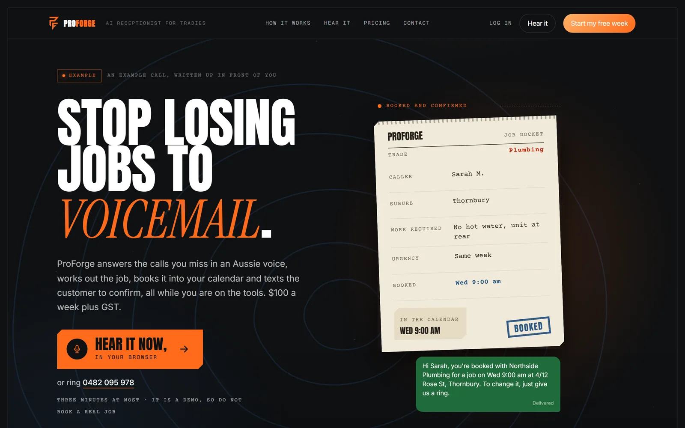

ProForge
An AI receptionist for Australian trades.
A plumber under a house can't answer the phone, and the caller rings the next plumber. ProForge picks up in an Australian voice at any hour, books the job into the calendar, texts a confirmation, chases the quote, and puts a genuine emergency straight through.
Operators run the business from a separate dashboard with its own billing.
- Stack
- Next.js, TypeScript, Supabase, n8n, Twilio, Vapi
- Role
- Sole developer, end to end
app.proforge.com.au